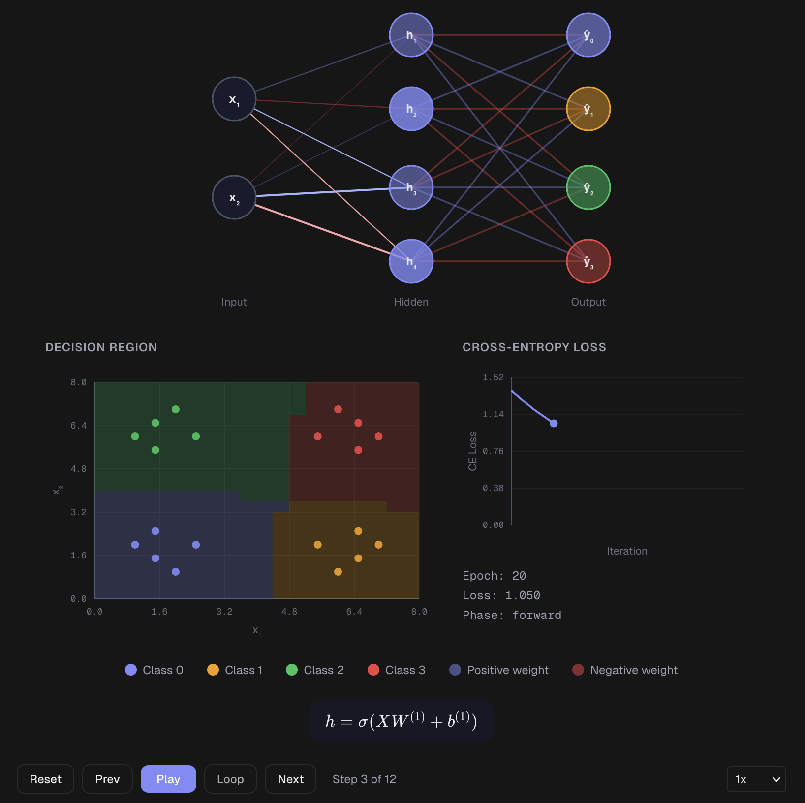

AI-Assisted Development | Next.js 16 | React 19 | TypeScript | Built in 3 Weekends

From concept to a fully functional, live production platform with 25 interactive topics — designed and deployed in 3 weekends using AI coding tools. This demonstrates rapid ideation and the ability to ship quality software under real constraints.
KLAR (Knowledge Lab for Algorithms & Reasoning) is an open-source interactive learning platform for Data Structures & Algorithms (DSA) and Machine Learning (ML). Each topic follows 3 steps — Math → Visual → Code — to guide learners from mathematical intuition through animated visualizations to runnable code examples. The platform covers 25 topics (15 DSA + 10 ML), each with three fully interactive phases, and is live at klar-learn.dev.
25 topics in total: 15 Data Structures & Algorithms (covering sorting, searching, trees, graphs, dynamic programming, and more) and 10 Machine Learning topics (covering linear regression, classification, neural networks, clustering, and more). Each topic includes three interactive phases, totalling 75 interactive learning modules across the platform.
KLAR is built as a Next.js 16 application with static export, hosted on GitHub Pages and served via a custom domain (klar-learn.dev). The static export approach eliminates server costs, ensures zero cold starts, and delivers near-instant page loads globally. Framer Motion handles all client-side animation, while KaTeX and Shiki run at build time to pre-render math and code blocks. Playwright is used for end-to-end testing across all topic pages.